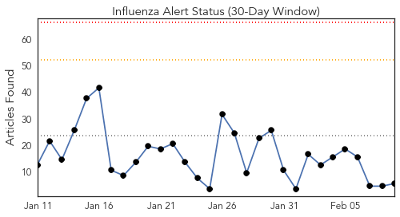
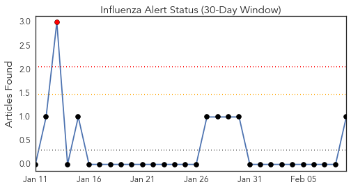
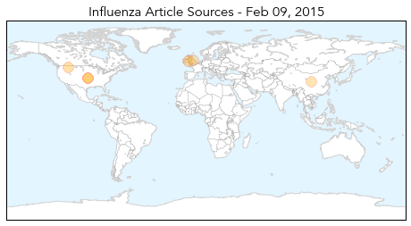
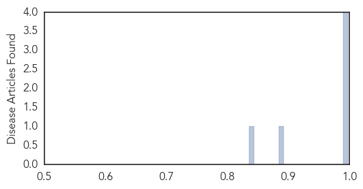
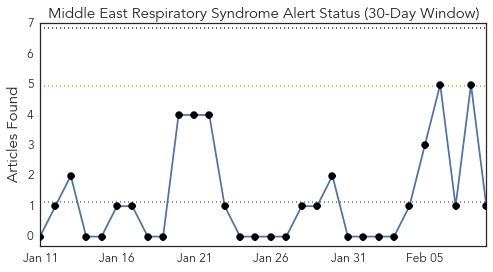
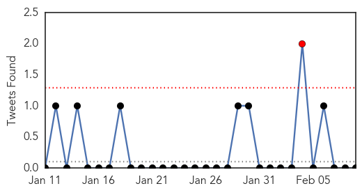
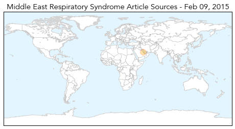

Influenza
30-Day Web Trend
0 alerts, 0 warnings

30-Day Twitter Trend
1 alerts, 0 warnings

Article Locations
Article Confidences
Top Articles:
- 0.997
- Influenza has claimed 10 lives in Montana
- 0.996
- Hospitals cut visits in bid to curb flu virus
- 0.994
- Hong Kong battles nasty strain of Influenza that’s killed 140 so far
- 0.991
- Flu Season 2015: Influenza-Related Illnesses Tied To Surge In Hospital Admissions For UK Kids
- 0.886
- New flu jabs to be studied
- 0.836
- H5N1 bird flu strikes Canadian flock
Top Tweets:
- 0.885
- RT: Hong Kong health minister warns that more deadly virus could emerge from bird flu and seasonal influenza http://t.co/r…
MERS
30-Day Web Trend
0 alerts, 0 warnings

30-Day Twitter Trend
4 alerts, 0 warnings

Article Locations
Article Confidences

Top Articles:
Top Tweets:
-
No tweets found for Feb 09, 2015